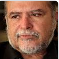
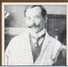
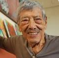
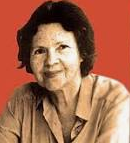

antonio bonilla: es un pintor y muralista salvadoreño. Realizó estudios de Arquitectura en la Universidad de El Salvador, los cuales dejó inacabados para dedicarse a la pintura

carlos alberto imery: fue un destacado pintor y profesor de artes gráficas salvadoreño. Fue fundador y director de la Escuela Nacional de Artes Gráficas donde estudiaron grandes artistas como Carlos Cañas o José Mejía Vides

carlos cañas: fue uno de los mayores exponentes en la historia de la pintura de El Salvador. Se considera el precursor del arte abstracto en su país, aunque su prolífica obra se expresó en diferentes corrientes artísticas a través de los años. ?el año 2012 fue reconocido con el Premio Nacional de Cultura.

julia diaz: fue una pintora, gestora cultural y fundadora de la primera galería de arte en El Salvador.?Fue alumna de Valero Lecha, pintor español radicado en El Salvador, al igual que Noé Canjura y Raúl Elas Reyes